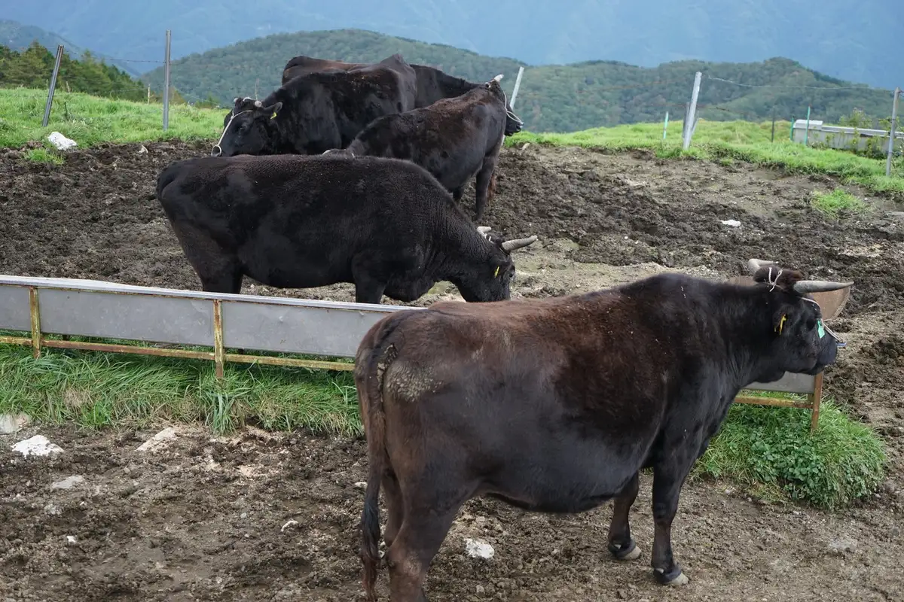
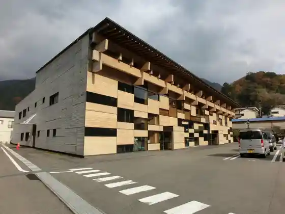
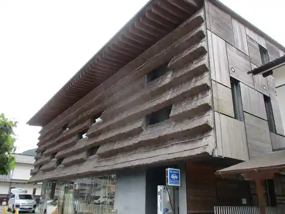
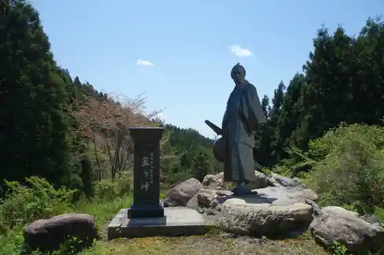
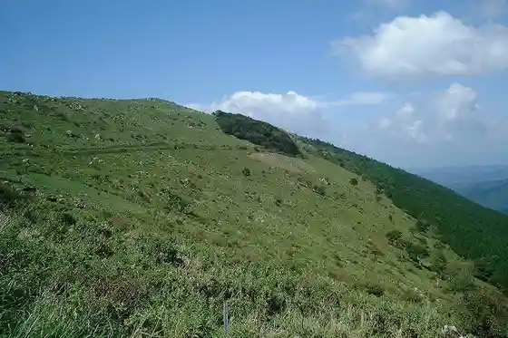

Yusuhara
Yusuhara · Kochi
Yusuhara
Highlighted on the Kochi map.

Stay
Kumo no Ue no Hotel Bekkan Marushieyusuhara
Dining
Kumo no Ue no Resutoran
Kusabuki
Shiemuwa
Indiizu
Chimujirubanresutoran Takatori
Supaisu & Kare BONGA
Kazaguruma
Sights
Tengu Highlands
Yusuhara Town Hall

Machi no Eki (Yusuhara)

Niragatoge

Ichiyagamori

Kamiari Kyo no Senmaida
Onogahara